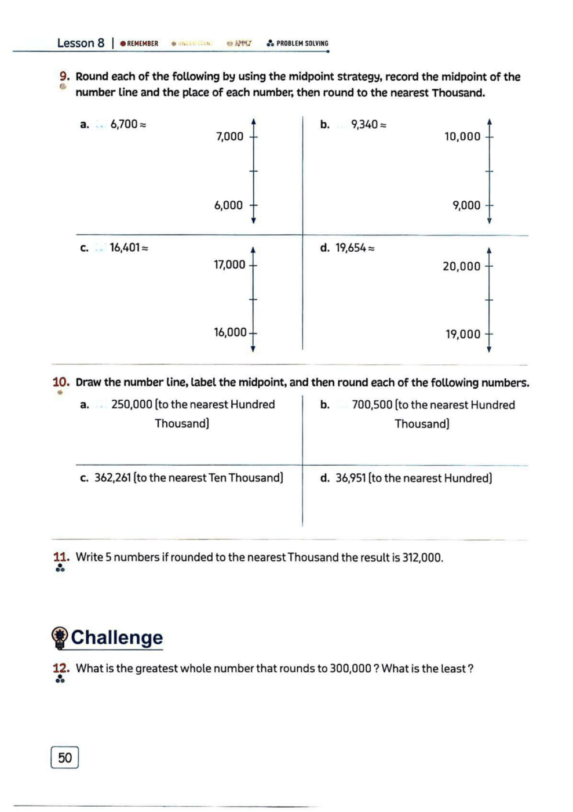
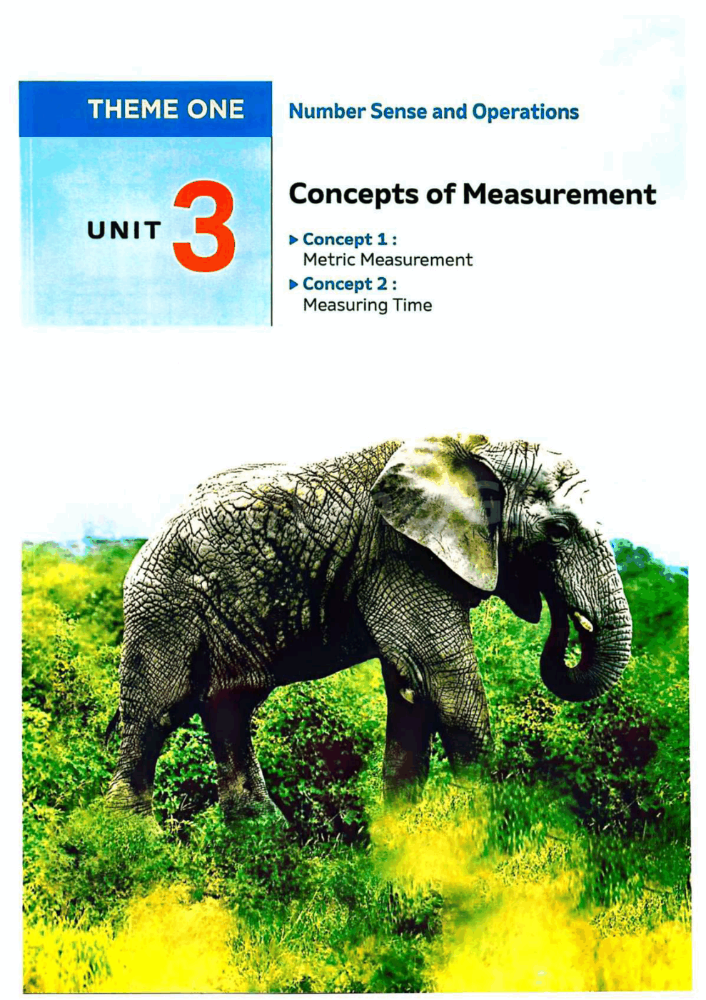

🖼️ معرض النماذج الرياضية البصرية (من كتاب المعاصر ماث):
🔍 اضغط لتكبير المخططات الرياضية وفهم القوانين
Place Value & Period Groups • القيمة المكانية
جدول القيمة المكانية حتى المليار وصيغ كتابة الأعداد.

Bar Models • النماذج الشريطية لحل المعادلات
استراتيجية بصرية قوية لحل مسائل الجمع والطرح المجهولة.

Perimeter & Area Rules • قوانين المحيط والمساحة
قوانين ورسوم الأشكال الهندسية المركبة من كتاب المعاصر.